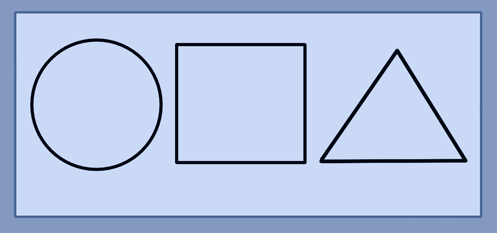
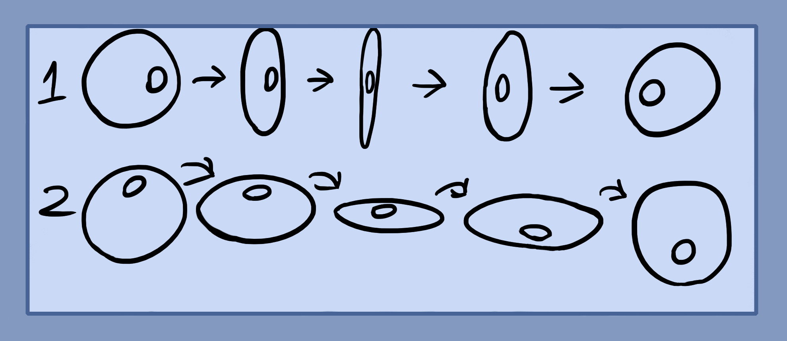
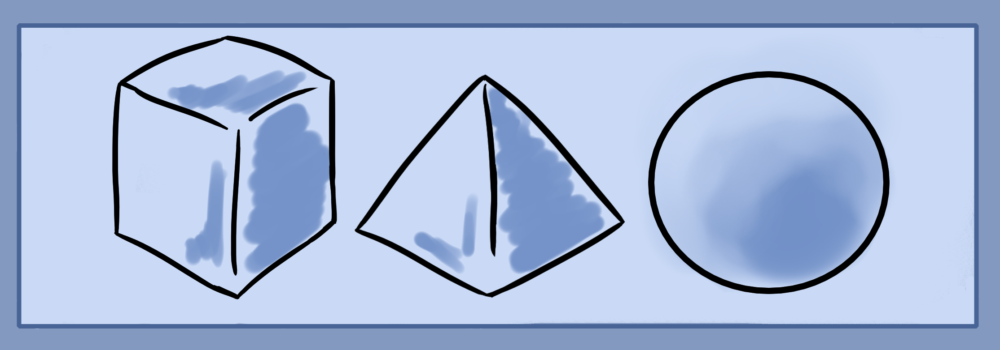

Now it is time to develop your imagination after gaining some mental strength and clarity.
Above are the three basic two dimensional geometrical objects. Circle square and triangle. These are used frequently when forming arrays, barriers and magic circles.
Geometry Practice
Start by relaxing and closing your eyes. Then either imagine a white or black background. After that, pick a color like blue or red and imagine a circle of light in your chosen color. Move this ring around, up, down, left, right. In patterns in a circular motion, etc. Then, warp the ring so that it moves in three dimensional space. Spinning it on using the central axis point. This means flipping and turning it so that the sides come towards you and away as shown below.
The little mark is to show rotation in space. It changes from left to right or top to bottom. You will also want to move it from the X angles which are the north east, north west, south east and south west angles.
Rotate and move the ring freely. This will develop your imagination.
Next, try the same exercise by using a square and triangle.
Practice the past exercises as much as you need in order to feel comfortable with the next one. Imagination gets stronger every day that you practice, but do remember to take rest days for good health.
Geometry Practice 2
Next level is to visualize three dimensional geometry. Above are the three basic geometries which you can use to imagine.
Similarly like in the past exercise, start by bringing up the object in your mind, decide whether it is made out of physical, solid material or light. Next, move it around in an X, Y, Z axis or forward, left and right, backwards, up down and the X or in between angles. After you've mastered the simple stiff movements, start to spin it around in different angles as if you were trying to look at each side. Continue with the other two objects.